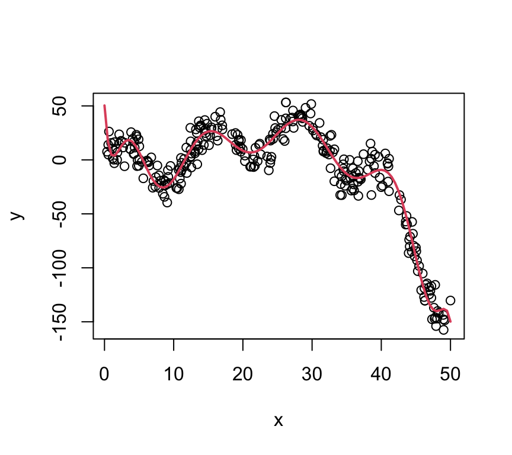

13 Non-Linear Relationships with Linear Models
13.1 Non-Linear Relationships
Arbitrarily Shaped Functions
The plot on the right is the function: \[ y = 2 + \frac{1}{5}x^2 - 8\log(x) - 0.005x^3 + 20\sin\left(\frac{x}{2}\right) + \epsilon \]
The twist: The fitted line is just a polynomial model: \(y = \beta_0 + \sum_{j=1}^{12}\beta_jx^j\)
Fitting a Polynomial
To fit a polynomial of order \(k\): \[ y = \beta_0 + \sum_{j=1}^{k}\beta_jx^j + \epsilon \] we can simply fit a linear model to transformed predictors, i.e.: \[ x_1 = x;\; x_2 = x^2;\; x_3 = x^3;\;... \] and we can just fit a linear model as usual!
… that seems too easy?
Choosing Polynomial Order
There are two common options:
- Domain knowledge
- Is there a theoretical reason to use a cubic?
- Reduce prediction error
- Cross-validation or ANOVA, depending on problem.
Domain Knowledge: Stopping Distance
The stopping distance is theoretically proportional to the square of the speed.
- A line might fit
- Fits poorly at 0 (negative stopping distances for positive speed?)
- A quadratic fits better?
- A cubic does something funky at 0.

Choosing Order with ANOVA
X <- data.frame(dist = cars$dist, x1 = cars$speed, x2 = cars$speed^2,
x3 = cars$speed^3, x4 = cars$speed^4)
lm(dist ~ ., data = X) |> anova()Analysis of Variance Table
Response: dist
Df Sum Sq Mean Sq F value Pr(>F)
x1 1 21185.5 21185.5 92.5775 1.716e-12 ***
x2 1 528.8 528.8 2.3108 0.1355
x3 1 190.4 190.4 0.8318 0.3666
x4 1 336.5 336.5 1.4707 0.2316
Residuals 45 10297.8 228.8
---
Signif. codes: 0 '***' 0.001 '**' 0.01 '*' 0.05 '.' 0.1 ' ' 1In this situation, Sequential Sum-of-Squares makes sense! (Disagrees with theory, though. Go with theory.)
Stopping Distance \(\propto\) Speed\(^2\)
A second order polynomial is: \[ y = \beta_0 + \beta_1x + \beta_2x^2 \]
The implied model is: \[ y = \beta_2x^2 \]

Unconventional ESS
X <- data.frame(dist = cars$dist, x1 = cars$speed, x2 = cars$speed^2,
x3 = cars$speed^3, x4 = cars$speed^4)
m1 <- lm(dist ~ x1 + x2, data = X)
m2 <- lm(dist ~ -1 + x2, data = X)
anova(m2, m1)Analysis of Variance Table
Model 1: dist ~ -1 + x2
Model 2: dist ~ x1 + x2
Res.Df RSS Df Sum of Sq F Pr(>F)
1 49 11936
2 47 10825 2 1111.2 2.4123 0.1006Not a significant difference in models, so go with simpler one: \(y = \beta_2x^2\)
- This is highly specific to this situation - see cautions later.
Polynomial Models will Overfit!
True model: \(f(x) = 2 + 25x + 5x^2 - x^3\) (cubic), Var(\(\epsilon\)) = 40

Multiple Regression Polynomial Models
A full polynomial model of order 2 with two predictors is: \[ y = \beta_0 + \beta_1x_1 + \beta_2x_2 + \beta_{11}x_1^2 + \beta_{22}x_2^2 + \beta_{12}x_1x_2 \] In R this can be specified as:
lm(y ~ (x1 + x2)^2)- This is why you can’t use
y ~ x + x^2to get a polynomial model - R tries to interpret this as a model specification rather than a transformation. - We’ll learn more about interactions and transformations in the next few lectures.
13.2 Cautions about Polynomials
Lower Order Terms
Unless there’s a strong physical reason,
- \((ax - b)^2\) is the model, not \(\beta_0 + \beta_1x + \beta_{11}x^2\)
Orders higher than 3 are rarely jutified
Recall the interpretation of a slope:
- A one unit increase in \(x\) is associated with a \(\beta_1\) unit increase in \(y\).
- This interpretation fails in quadratrics, and fails spectacularly in higher orders.
See splines for more flexibility
Extrapolation is Fraught with Peril
Unless you have the true order (you don’t), polynomials diverge almost immediately.
shiny::runGitHub(repo = "DBecker7/DB7_TeachingApps",
subdir = "Apps/polyFit")poly() uses orthogonal polynomials
betas <- replicate(1000,
coef(lm(y ~ poly(x, 2, raw = TRUE),
data = data.frame(x = runif(30, 0, 10),
y = (x - 2)^2 + rnorm(30, 0, 10)))))
plot(t(betas))After squaring, cubing, etc., each column of X is transformed to be orthogonal to the previous.
- Takes care of transformations for you when using
predict(). - The
coef()function is useless. - Mean-centering also helps!
Orthogonal Polynomials
x <- sort(runif(60, 0, 10))
par(mfrow = c(2,3))
for(i in 1:3) {
plot(x, poly(x, 3, raw = TRUE)[,i])
}
for(i in 1:3) {
plot(x, poly(x, 3, raw = FALSE)[,i])
}13.3 Should I Use a Polynomial?
Example: mtcars
[code]
Summary
13.4 Participation Questions
Q1
Given a correctly structured model matrix (\(X\)), polynomial models can be fit with the same routines as linear models (without modification).
- True
- False
Q2
Any smooth function can be approximated by a polynomial.
- True
- False
Q3
Orthogonal polynomials are used because:
- They remove covariance between \(x\), \(x^2\), \(x^3\), etc.
- They remove the covariance between \(\beta_1\), \(\beta_{11}\), \(\beta_{111}\), etc.
- They result in p-values that make sense.
- All of the above.
Q4
Which statement is true?
- We should start with a high order polynomial and use Sequential Sum-of-Squares to choose the order.
- We should try second order polynomials if we think there’s a curve to our model, but should generally avoid polynomials unless there’s a strong contextual reason.
- We saw last week that estimates are still unbiased in the presence of extraneous predictors, so it’s fine to include a higher order polynomial in our model.